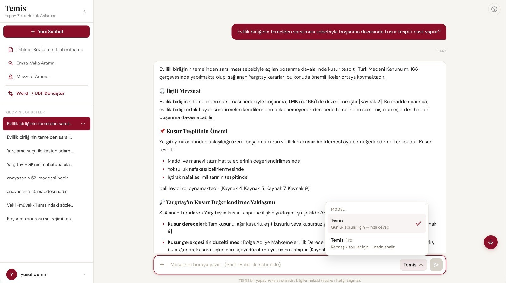

AI Revolution in Law
An advanced agent-based legal assistant featuring multi-step retrieval and orchestration over live judicial databases. Specialized LLMs cooperate to generate fully verifiable, referenced answers in seconds.
Our Development Team
Project Advisor
Prof. Dr. İlyas Çiçekli
Hacettepe University / Computer Engineering
Yusuf Demir
AI Engineer
Oktay Kaplan
Backend / Frontend Engineer
Kutluhan Uzunsoy
Backend / Frontend Engineer
Highlighted Features
Schema-Constrained Query Planning
Forces the planner LLM output into a strict JSON schema via forced tool-use, preventing fabricated legal references and ensuring traceable routing.
Chamber-Aware Retrieval
Maintains a topic-to-chamber mapping to route queries to the correct specialized court APIs, eliminating unrelated decisions.
Domain-Specific Reranking
Reranks raw keyword search results by semantic similarity and applies score boosts to matching chambers for highly relevant precedents.
Independent Answer Judge
Uses a separate, lightweight LLM to evaluate generated answers independently, automatically triggering broader searches if answers fall short.
In-App Source Viewers
Fetches source documents server-side and renders them in-app, providing distinct, verifiable URLs for each citation linking to official portals.
Article-Level Statute Matching
Downloads full statute texts and extracts specifically relevant articles with a keyword matcher rather than citing an entire law.
Screenshots & Demo

TEMIS User Interface